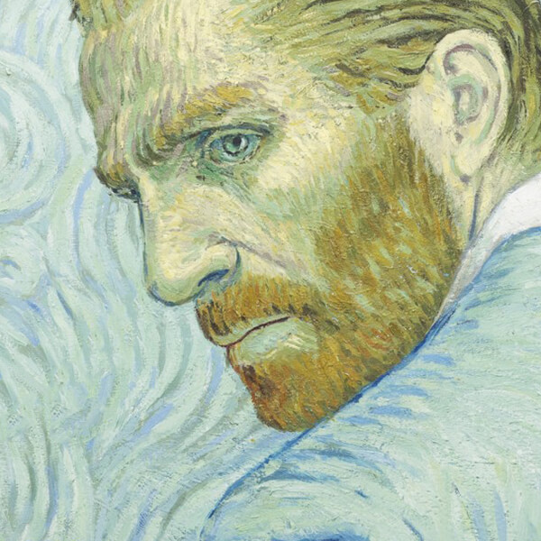

绘画是静止的旋律，至爱是流动的音符
Loving Vincent
影片《至爱梵高》的新奇之处，也是最有趣的一点是：画面采用梵高为曾经和自己有交集的人的画作来作为形象，观众则是通过画作形象认识了他们，听到他们说出心中对梵高的印象。于是出现了一个“互看”：梵高看向身边人、身边人看向梵高、观众看向梵高眼中的他们，之后又带着我们重新聚焦梵高。在内容上，影片主要表达是用他人叙述塑造一个梵高，但同时也是具有片段性和拼凑性，更充满了客观和主观的双重属性。每个人都在佐证或者给另一个人的描述提出矛盾之处。在不同身份的人种种叙述之中，并没有所谓的真实和真相，只有选择相信什么，可以说是呈现出一个多人的“罗生门”式的梵高。但影片真正的目的并非还原一个所谓真实的梵高，而是通过他们的口反而让我们看到当时的人们对于梵高的种种举动，似乎在告诉我们，梵高所生存的环境究竟是怎样的，而他在如此环境下的创作是多么让人感觉神奇！
无论从哪个角度看，梵高的一生似乎都充满着悲情色彩。无论是他个人还是他的画作都不被当时的世界所理解、所善待、所尊重。人们常说的一句话是，天才与疯子仅一线之隔。但这世界、周遭的人对天才和疯子的态度却是天壤之别。最近看《人类简史》中，提到每个社会形态都会滋生出歧视。人们会不自觉地去排除异己。可能任何比较特殊的少数个体，纵然没有伤害到任何人，但如果他足够特别，或者说不融于大家，那么他就会成为被攻击、冷落的对象。在这里，我不想为他谋取公道，这个世界本就是如此的残酷。当一个社会中最基本的善意就消失不见，他需要的尊重自然也无从找寻。如果一个人无法得到社会认同，无法拥有最基本的宽容和善意，无疑他是痛苦的。但如果他在当时得到了这些，如果当时的画坛认识到了他的价值，那么，这份痛苦如果远离他，他还会画出这样的《星空》吗？之前看过有文章推测，梵高眼中的世界，是因为抑郁症之后吃药导致的。所以，痛苦是孕育旷世奇作的土壤？在技法和热爱以及自我表达上，我相信他依然会画出绝世画作，但要知道莫大的荣誉也同样是一剂毒药。如果当时的巴黎为他疯狂，如果他得到了追捧，那么他的画作会不会还继续有这样的风格呢？如果一切都是注定，那或许这就是命运最好的安排吧。
梵高的痛苦和他的热爱并不矛盾。他遭受痛苦，但他心中对绘画的那团火，对世界万物的爱一直在燃烧。他并非一个可怜虫，相反他对生命的热爱要比他人要强大的多。所以，他为什么会自杀？影片同样提出了一个假想：他是被某人误伤，但因为心中再无生存的希望，以及不想怪罪他人，所以提出不需医治。关于梵高自杀的真相到底是如何，如今可能也并非有定论。但他坚决的想离开这个世界，应该是毋庸置疑的。诚如他所说，他看尽世界之后，发现并无眷恋，相反可能会拖累他人，于是乎感觉没有生存下去的必要。一个人继续生存的意义可以是需要他人以及被他人需要。一直孑然一身的他，或许认为这一次真的可以放手了。我一直认为主动和这个世界说再见的人是勇敢的。梵高是白羊座，纵观他的一生也非常符合这个火象星座的特质——他那么热烈的爱着一件事业，那么专注于此无法自拔，那么的善恶分明，不谙世事，和朋友交好的时候掏心掏肺，吵架的时候也大发雷霆。这就是他啊，如此炽热的燃烧自己。
影片用临摹梵高的画作作为基础来呈现油画质感的画面，让我再一次感受到那些跃动的笔触仿佛要跳出来一般。他们就是梵高本人的心血，也是他的灵魂。而今天，后世之所以喜欢他的画，也是因为他毫无保留的真实展现自己眼中的世界。因为，世界上最特别的也最难能可贵的就是坚持自我。
1888年，梵高离开喧闹都市，只身来到法国南部，陶醉在了这明丽的一望无际的原野中。自然的色彩竟然有这样绚烂，他被眼前的美景震撼了。当地人非常好奇，这个人每天太阳一升起就背着一捆画布和颜料奔向田野，从来不与任何人说话。人们看到他的时候，都交头接耳：疯子来了！没人知道，众人眼里的疯子，就是人类世界最伟大的画家梵高，就是这个时期，就是这片美丽的田野，人类历史上最伟大的油画作品诞生了！